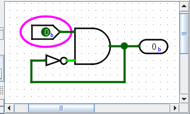
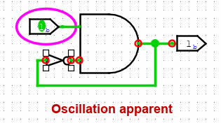

振荡错误
传播算法通常在后台工作，不会引起注意；但当您创建振荡电路时，它就会变得非常明显。

此电路当前处于稳定状态。但如果您将输入改为 1，电路实际上会进入无限循环。一段时间后，Logisim 会放弃继续仿真，并显示“明显振荡”消息，告知您它认为电路正在振荡。

它会显示停止仿真时的值。这些值看起来是错误的：在此截图中，AND 门有一个输入为 0，却输出 1；NOT 门则可能显示为输入 1、输出 1。
Logisim 会以红色圆圈标出似乎涉及振荡的每个位置。如果相关位置位于子电路内，Logisim 会以红色绘制该子电路的轮廓。
当 Logisim 检测到振荡时，它会关闭所有进一步的仿真。您可以使用菜单| 仿真 |→| 启用仿真 |重新启用仿真。
Logisim 使用一种相当简单的技术检测振荡：如果电路仿真似乎进行了过多迭代，它就会放弃并报告振荡。（它会把最后 25% 迭代中被触及的位置识别为相关位置。）因此，Logisim 也可能误报振荡，尤其是在处理非常大的电路时；不过这样的电路通常会比教学中常见的 Logisim 电路大得多。无论如何，如果您确信报告有误，可以通过项目选项窗口的仿真选项卡配置报告振荡前允许完成的迭代次数。
下一节： 不足之处。